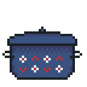

ingredients
| 2 strips bacon |
| 4 chicken thighs |
| garlic powder |
| dried itatlian herb mix |
| salt |
| 1-2 tsp olive oil |
| 3 cups chicken broth |
| 1 cup frozen corn |
| 1 large potato cut into chunks |
| 3/4 cup half and half |
| 4 oz cottage cheese (optional) |
| 1/4 cup cheddar cheese |
| 1 tbsp tomato paste |

i like to serve this soup with a side ofgarlic bread or saltine crackers
steps
| 1. season the chicken with garlic powder, herbs, and salt |
| 2. cook the bacon in a soup pot |
| 3. remove the bacon, save the drippings and add olive oil (if needed) |
| 4. sear the chicken |
| 5. add tomato paste, cook until it turns dark red |
| 6. add broth and potato |
| 7. let simmer for 30min-1hr |
| 8. add frozen corn |
| 9. if using cottage cheese, blend half and half with cottage cheese |
| 10. stir in half and half mixture and cheddar cheese |
| 11. serve! |